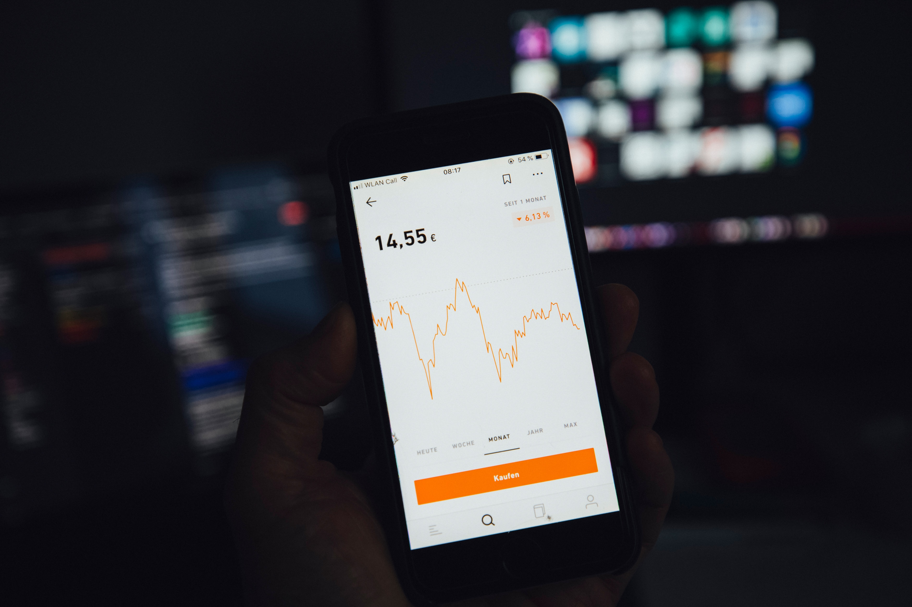

In the realm of website evaluation, it's essential to consider not only performance and user experience metrics but also the churn rate—a metric that sheds light on customer retention and loyalty. In this blog post, we will explore six key metrics for evaluating website performance, user experience, and churn rate, providing real-world examples to highlight their significance.

Page Load Time: Page Load Time is the amount of time it takes for a web page to fully load and become visible to users. It is an important aspect in user experience, search engine rankings, and website performance. Faster load times contribute to higher user satisfaction and lower bounce rates. Optimization techniques like as code and asset optimization, picture compression, caching, and limiting external queries all contribute to reduce page load time. Example The page load time on Twitter.com refers to the time it takes for the Twitter site or a user's profile page to fully load and display all necessary elements such as the user interface, tweets, photos, and navigation functions. Twitter.com's rapid page load time guarantees that users can immediately access and connect with the platform, read tweets, upload their own content, and interact with other users in real-time, resulting in a smooth and responsive user experience.

User Engagement: User engagement is the level of interaction, involvement, and interest displayed by users when dealing with a product, service, or platform.User engagement indicators such as time on page, scroll depth, and click-through rates provide information about how people interact with your website. Higher user interaction implies that visitors value your content and are more likely to stick with your business. Example Instagram user engagement is assessed through behaviors including liking, commenting, sharing, and saving posts, as well as following accounts and interacting with Instagram Stories. High Instagram user engagement shows active participation, interest, and pleasure of content provided by users and companies.
Conversion Rate: Conversion Rate is the percentage of website or app visitors who complete a desired activity, such as completing a purchase, filling out a form, or subscribing to a service. It is an important indicator for assessing the effectiveness of marketing initiatives and user experience. A higher conversion rate suggests that a greater proportion of visitors successfully complete the targeted action, showing the efficiency of the conversion funnel. Example The Shopify conversion rate is the percentage of website visitors who make a purchase through the platform's online stores. Businesses utilizing Shopify may increase online sales, improve customer engagement, and optimize income potential by maximizing the conversion rate.

Mobile-Friendly Design: Mobile-Friendly Design is the process of building websites or applications that are optimized and easy to use on mobile devices such as smartphones and tablets. It entails creating and implementing flexible layouts, intuitive navigation, and modifying information to fit smaller screens. A mobile-friendly design ensures that consumers can access and engage with the website or app without having to scroll, zoom, or deal with usability concerns. Example Mobile-friendly design is a top priority for Airbnb, a popular online marketplace for rentals, to improve user experience. Airbnb ensures easy browsing and booking on mobile devices with adaptable layouts, streamlined navigation, and optimized content. By putting a strong emphasis on mobile-friendly design, Airbnb increases engagement and makes content easier to access on mobile devices.
Bounce Rate: Bounce Rate is the percentage of visitors who leave a website or app after viewing only one page without interacting or travelling further. A high bounce rate often suggests that visitors did not find what they were seeking for or that the website failed to engage them successfully. A low bounce rate, on the other hand, implies that visitors are investigating numerous pages, showing a higher level of engagement and interest. Example When visitors land on an article page on a news website, such as CNN or BBC, they depart without exploring other pages or engaging further. A high bounce rate could suggest that the article did not match the visitor's expectations, that the material was insufficiently interesting, or that the user experience was inadequate. To encourage readers to explore additional stories and stay engaged on the site, news websites attempt to lower bounce rates by providing related article ideas, enticing headlines, and intriguing content.
Churn Rate: The churn rate is the percentage of customers or subscribers who stop using or cancel a product or service within a specified time frame. It is an important indicator for measuring client attrition and retention. A high churn rate suggests a higher rate of client attrition, which can have negative consequences for businesses such as lower revenue and customer loyalty. Lower turnover rates suggest a higher degree of customer happiness, engagement, and long-term value. Example Netflix, a popular streaming service, has a high churn rate, which occurs when consumers cancel their subscriptions. A high churn rate indicates that users are canceling their subscriptions, either due to dissatisfaction with content offerings, greater competition, or price adjustments. Netflix invests in content creation, tailored suggestions, and user experience advancements to keep subscribers.
In conclusion, evaluating website performance, user experience, and churn rate is crucial for businesses aiming to provide an exceptional online presence and retain loyal customers. The six key metrics discussed offer valuable insights into different aspects of a website's effectiveness. By focusing on these metrics and implementing strategies to optimize them, businesses can enhance user satisfaction, increase conversions, and reduce customer churn. Emphasizing the importance of these metrics will enable businesses to stay competitive in today's digital landscape and deliver an outstanding online experience to their audience.